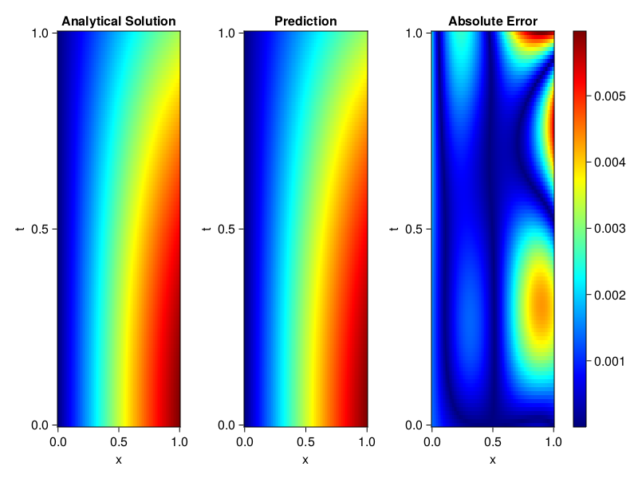
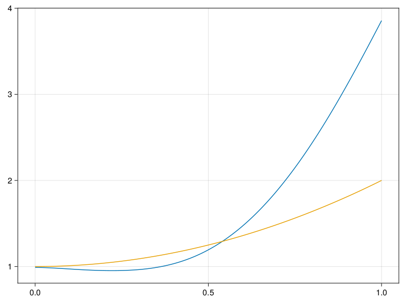

Inverse problem for the wave equation with unknown velocity field
We are going to sovle the wave equation.
using Sophon, ModelingToolkit, IntervalSets
using Optimization, OptimizationOptimJL
@parameters x, t
@variables u(..), c(..)
Dₜ = Differential(t)
Dₜ² = Differential(t)^2
Dₓ² = Differential(x)^2
s(x,t) = abs2(x) * sin(x) * cos(t)
eq = Dₜ²(u(x,t)) ~ c(x) * Dₓ²(u(x,t)) + s(x,t)
bcs = [u(x, 0) ~ sin(x),
Dₜ(u(x, 0)) ~ 0,
u(0, t) ~ 0,
u(1, t) ~ sin(1) * cos(t)]
domains = [t ∈ Interval(0.0, 1.0),
x ∈ Interval(0.0, 1.0)]
@named wave = PDESystem(eq, bcs, domains, [t,x], [u(x,t),c(x)])\[ \begin{align} \frac{\mathrm{d}}{\mathrm{d}t} \frac{\mathrm{d}}{\mathrm{d}t} u\left( x, t \right) =& c\left( x \right) \frac{\mathrm{d}}{\mathrm{d}x} \frac{\mathrm{d}}{\mathrm{d}x} u\left( x, t \right) + \cos\left( t \right) \left|x\right|^{2} \sin\left( x \right) \end{align} \]
Here the velocity field $c(x)$ is unknown, we will approximate it with a neural network.
pinn = PINN(u = FullyConnected((2,16,16,16,1), sin),
c = FullyConnected((1,16,16,1), tanh))
sampler = QuasiRandomSampler(500,100)
strategy = NonAdaptiveTraining(1, (10,10,1,1))NonAdaptiveTraining{Int64, NTuple{4, Int64}}(1, (10, 10, 1, 1))Next we generate some data of $u(x,t)$. Here we place two sensors at $x=0.1$ and $x=0.5$.
ū(x,t) = sin(x) * cos(t)
x_data = hcat(fill(0.1, 1, 50), fill(0.5, 1, 50))
t_data = repeat(range(0.0, 1.0, length = 50),2)'
input_data = [x_data; t_data]
u_data = ū.(x_data, t_data)1×100 Matrix{Float64}:
0.0998334 0.0998126 0.0997503 0.0996464 … 0.275281 0.267213 0.259035Finally we construct the inverse problem and solve it.
additional_loss(phi, θ) = sum(abs2, phi.u(input_data, θ.u) .- u_data)
prob = Sophon.discretize(wave, pinn, sampler, strategy; additional_loss=additional_loss)
@time res = Optimization.solve(prob, BFGS(), maxiters=1000)u: ComponentVector{Float64}(u = (layer_1 = (weight = [-0.5978507894647969 -1.4684479610087848; 1.013222208817333 -1.009366132140213; … ; -0.4669159461457806 -1.2361227375120383; 0.5588304994522929 -1.2277761895481127], bias = [0.012542050948969199; 0.33711201376764666; … ; 0.4430849623239598; 0.08001557831487036;;]), layer_2 = (weight = [0.4061853981169978 0.365300003462232 … -0.28068967083032537 -0.5622945024965151; 0.21206436366033243 0.006744021917125683 … 0.4952272739390333 0.38463420961913986; … ; -0.2629988841428073 0.11834075787436703 … -0.1773107690441715 -0.17836108110432122; 0.34735929173753705 0.02359482990835529 … 0.2724871053565572 0.30060512746845824], bias = [-0.08283664790404276; 0.26387836744827514; … ; 0.1482617274431323; 0.07157898178206304;;]), layer_3 = (weight = [-0.10692032834332414 0.3470378287047401 … 0.37301424453776894 -0.43112129078084127; 0.4092409536641308 -0.42579332074866305 … -0.32996301035960524 -0.3693286439125554; … ; 0.1048797541198817 -0.33641478691663723 … -0.189990613754083 0.5049642089873211; 0.10329407001162381 0.2127289812572582 … -0.304794962515608 -0.3672178783037095], bias = [0.03403285541322629; 0.09883548225730834; … ; 0.1451747012388663; -0.23392638808218863;;]), layer_4 = (weight = [0.03263141822325396 0.5157185442112984 … -0.5212434066737565 0.6960848075578059], bias = [-0.03949802507477048;;])), c = (layer_1 = (weight = [0.5445125326615791; -0.8444936774001436; … ; 0.45547609990627763; 1.0124659574789114;;], bias = [0.373829056540177; 0.21745934489618554; … ; 0.05224466363408527; -0.28748528251420163;;]), layer_2 = (weight = [0.18559913141781767 -0.3547235702499546 … 0.03732242255228128 -0.005529973397023303; -0.14526430169123283 0.7336501808823315 … -0.12061494194996047 -0.16680267078696126; … ; 0.3571612276971271 0.6604011412356844 … -0.23092689132617664 -0.7237946345614579; 0.7106209150973292 -0.6196491582754008 … 0.2903872852356364 0.3517961858962406], bias = [0.23807972470255317; -0.3058591359035205; … ; 0.1796557342887416; 0.0721713615285405;;]), layer_3 = (weight = [0.7877963052563254 -0.5560093580552014 … 0.5865731899700775 1.7966583212131448], bias = [0.7760471279686562;;])))Let's visualize the predictted solution and inferred velocity
using CairoMakie
ts = range(0, 1; length=100)
xs = range(0, 1; length=100)
u_pred = [pinn.phi.u([x, t], res.u.u)[1] for x in xs, t in ts]
c_pred = [pinn.phi.c([x], res.u.c)[1] for x in xs]
u_true = [ū(x, t) for x in xs, t in ts]
c_true = 1 .+ abs2.(xs) |> vec
axis = (xlabel="x", ylabel="t", title="Analytical Solution")
fig, ax1, hm1 = heatmap(xs, ts, u_true, axis=axis; colormap=:jet)
ax2, hm2= heatmap(fig[1, end+1], xs, ts, u_pred, axis= merge(axis, (;title = "Prediction")); colormap=:jet)
ax3, hm3 = heatmap(fig[1, end+1], xs, ts, abs.(u_true .- u_pred), axis= merge(axis, (;title = "Absolute Error")); colormap=:jet)
Colorbar(fig[:, end+1], hm3)
fig
fig, ax = lines(xs, c_pred)
lines!(ax, xs, c_true)
fig